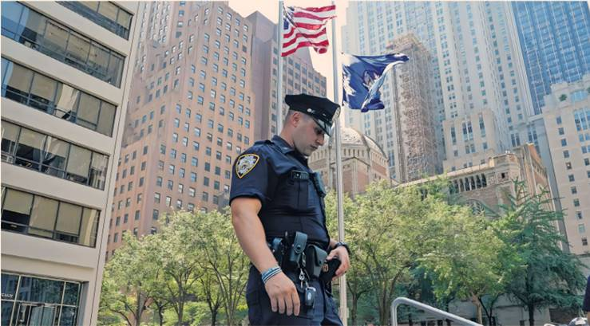

Wesley LePatner had established herself in the upper echelons of private markets behemoth Blackstone. She was one of the most accomplished women in US finance and a rising star in New York’s social and philanthropic circles. At Blackstone, where the company’s president Jonathan Gray championed her rise, the 43-year-old had been put in charge of its flagship property fund. The mother of two had recently joined the board of the Metropolitan Museum of Art and in 2023 received a leadership award from one of New York’s most influential philanthropic groups, the UJA Federation.
On Monday evening, as she left the office, she was fatally shot in the lobby of Blackstone’s global headquarters, a Park Avenue office tower, one of four killed by a gunman in a spree that has sparked renewed alarm across New York’s financial sector. Three others, including Didarul Islam, an officer with the New York Police Department providing building security under a programme that allows companies to hire off-duty police, were killed in the same attack by a gunman who walked into the building holding a large, unconcealed assault rifle.
The shooter, identified by the NYPD as Shane Tamura, 27, does not appear to have been targeting Blackstone, and there are indications that he stormed the Manhattan office tower intent on attacking the National Football League, which uses the same building. But the events have sent shockwaves through Blackstone and the capital of US business, prompting corporate leaders to rethink employee safety after the second killing of a US executive in less than a year. UnitedHealth Group executive Brian Thompson was assassinated in the city in December.
“In today’s world you’d be hard-pressed to say there are 100 per cent certain prevention measures that organisations or people could take,” said Jacob Silverman, chief executive of risk advisory Kroll. “But I do believe that in the wake of these two incidents in just nine months, there is heightened awareness and focus” on security measures.
Brookfield Properties and other large office landlords in New York City had been inundated with calls from clients asking to check or bolster security measures, said sources briefed on the matter. The attack has been particularly chilling because security had been in place at 345 Park Avenue, including having an off-duty police officer in the lobby.
“From the information we have right now, it appears they did the right things as far as physical security goes,” said Tim Gallagher, a managing director at Nardello & Co and former FBI executive who advises companies on the physical safety of their staff and buildings. “That’s concerning because it shows that if someone is willing to trade their life for yours, it’s extremely difficult to defend against.”
The shooter had sprayed bullets across the building’s limestone lobby, according to police. Many Blackstone workers, who make it a priority to be present on Mondays for weekly global investment reviews, were preparing to leave for the day when the shooting started. They were alerted to the barrage in a company email and over frantic Microsoft Teams messages, and told to shelter in place.
Tamura was able to make it to the 33rd floor of the office tower, killing another person in Rudin Management, the building’s owner, before taking his own life. In the abutting floors, Blackstone staff heard the sound of gunfire. Some employees barricaded themselves into their offices with sofas and shelves. Employees at consultancy KPMG, another tenant of the building, also made makeshift barricades.
By morning, Gray, and Blackstone chief executive Stephen Schwarzman, addressed the group’s roughly 5,000 employees, saying the attack had been the “worst day in the company’s history”. On a call with employees on Tuesday, Gray grew emotional speaking about LePatner, whom he characterised as a brilliant, compassionate colleague.
Gallagher, from Nardello & Co, said groups had approached him since the attack to discuss training staff to respond to active shooters, and to learn about artificial intelligence programmes that can identify guns in live security camera footage.
Blackstone’s headquarters occupies about half the floors of 345 Park Avenue, and its offices are secured by steel and glass doors. But the building’s elevators lack newer security features. Other finance executives questioned whether metal detectors would become more mainstream. Security was “already being discussed internally”, said the chief executive of a New York investment bank.
“You’ll probably see some of the larger landlords now thinking about whether they need to upgrade security — armed guards, controlled access, maybe even architectural changes.” He said that some companies facing protesters had introduced a double-entry system that “seemed extreme at the time, but now it starts to make sense’. But security had its limits, the person added. “Once someone walks in with an AR-15, who's there to stop them? That building actually had an armed guard, and he was killed. So it’s hard to say what more could've been done. Not everyone can have Seal Team Six on-site every day.”
S&P 500 groups had boosted security spending, with median spending on security for chief executives rising from $15,671 to $28,382 last year, according to figures from ISS-Corporate. “There have been two significant acts of violence in New York and everyone is trying to figure out how to get in front of information,’ said the head of security at a US healthcare company. “Now companies, smart companies, are saying, what does best-in-class security look like?”